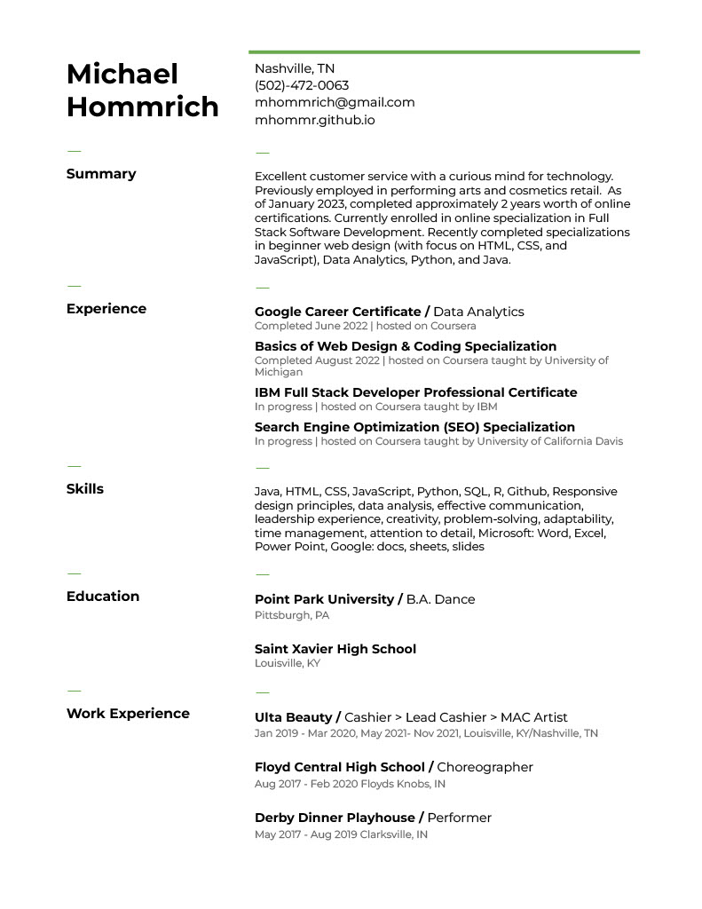

Work Experience
FRSH Aesthetics & Wellness
Mar 2022 - present
Manager, Head IT
- Established brand recognition on social media through logo design
- Created smooth booking process through design of website
- Instituted scheduling processes for provider
- Modernized records by digitizing patient health records by building electronic health record
Ulta Beauty
Jan 2019 - Mar 2020 | May 2021 - Nov 2021
Sales Associate
- Streamlined customers experience by advising and consulting with customers to match them with desired products and services
- Increased sales by building, organizing, and maintaining product displays
Lead Cashier
- Sold newest products and shared in-depth product knowledge by staying up-to-date on changing trends
- Met sales goals by corresponding daily sales goals and loyalty metrics from management to sales associates
- Improved customer loyalty by coaching sales associates in their loyalty techniques
MAC Artist
- Increased sales by showcasing MAC tools and products in classes and workshops
- Predicted and tracked sales goals for MAC brand products using past sales metrics
- Increased community participation and brand interest through promo event marketing
Floyd Central High School
Aug 2017 - Feb 2020
Assisstant Choreographer >
Choreographer
- Oversaw and maintained performance quality to ensure highest level of athleticism and safety
- Maximized teaching time by collaborating with team and parents to create rehearsal schedule
- Led rehearsals of up to 50 students, ages from 10-18
Chaperoned local tour of shows at grade schools
- Oversaw safety of students while traveling
- Assisted in transport, building, and take-down of costumes, set, and electric equipment
- Maintained quality of show through various obstacles and difficulties that come with touring a show
- Increased ticket sales and interest in program by creating striking, relevant choreography
Guest Teacher
- Empowered students through teaching new movement technique and strategies to approach new tasks
Derby Dinner Playhouse
May 2017 - Aug 2019
Performer
- Ensured consistent level of audience satisfaction by maintaining performance quality
- Boosted tickets sales through marketing in news media and community outreach
- Adapted to ever-changing environment of theater and things constantly going wrong
- Created self-safety standards to perform as often as was required
Ulta Beauty / Cashier > Lead Cashier > MAC Artist | Jan 2019 - Mar 2020, May 2021- Nov 2021, Louisville, KY/Nashville, TN
Floyd Central High School / Choreographer | Aug 2017 - Feb 2020 Floyds Knobs, IN
Derby Dinner Playhouse / Performer | May 2017 - Aug 2019 Clarksville, IN
Download resume


{kind=link}